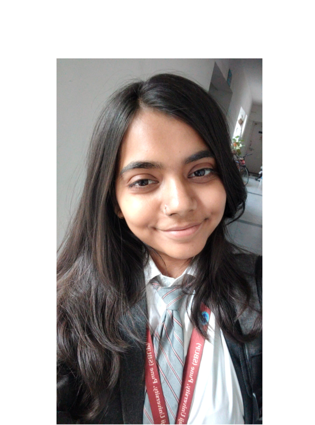
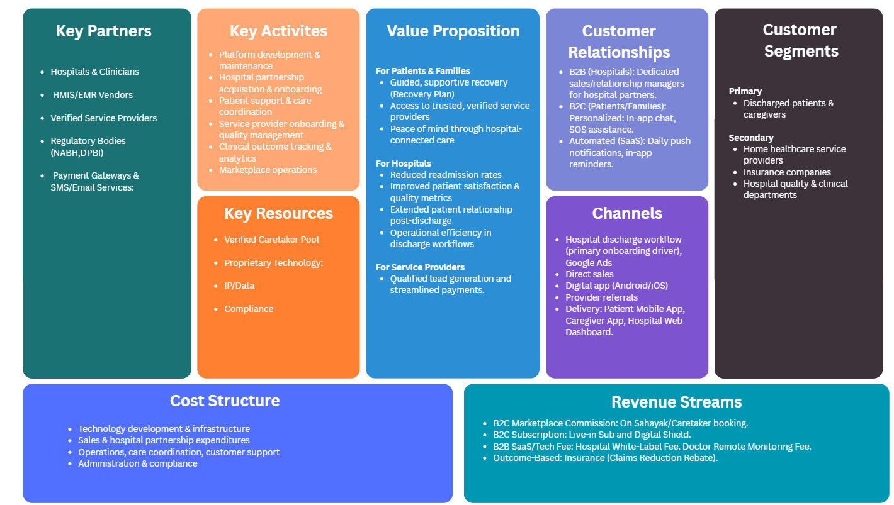
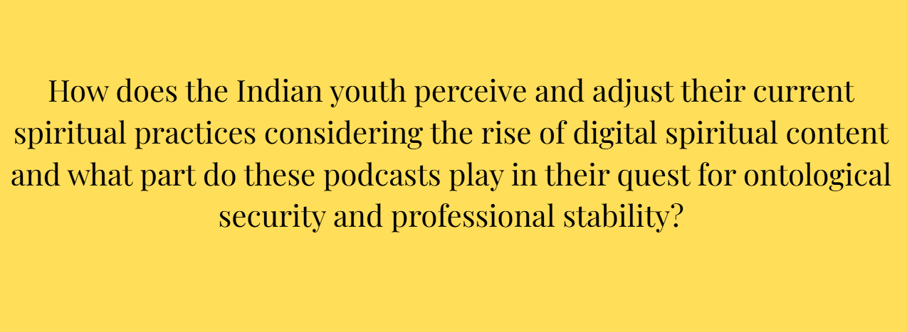
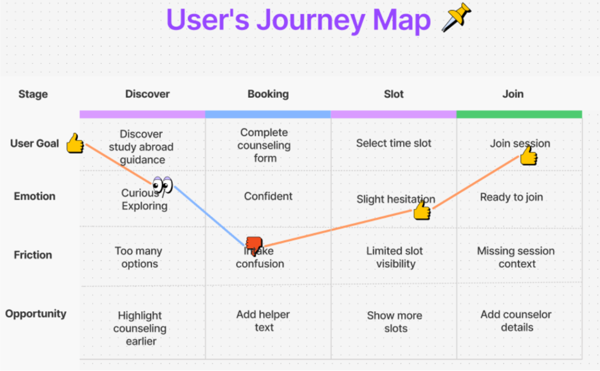
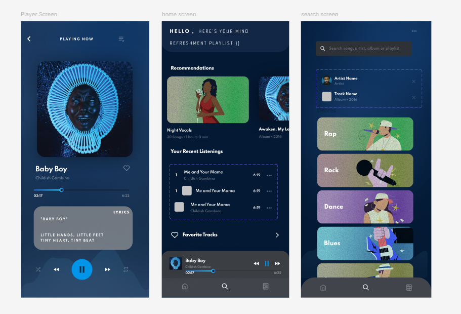
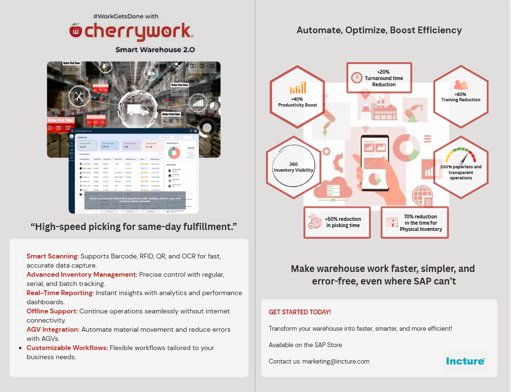

About

Richa Patil
Product Enthusiast Bangalore
I write the narratives of how people interact with technology by translating user challenges into seamless product experiences through product strategy, feature prioritization, and cross-functional collaboration. With a strong foundation in Agile, SDLC, and UI/UX design.
Featured Projects
A showcase of my product thinking, design, and research.

HealBridge
Bridging the gap between hospital discharge and home recovery through coordinated digital care.

Spiritual Podcasts
Exploring how India’s youth engage with digital spirituality.

LEAP
Optimizing counseling demo journey.

Paw Rescue
AI-Powered Stray Animal Rescue & Adoption Platform.

Impact Hub
A centralized platform for tracking, measuring, and scaling social impact initiatives.

Music App
Mood-driven UI redesign concept.

Cherrywork
SaaS Product Marketing strategy and GTM execution.
Internship
Education
Top Skills
See AllStrategy
Product Vision
Figma
UI/UX Design
FlutterFlow
No-code Dev
Research
User Analysis
Python
Data Analysis
GTM
Strategy